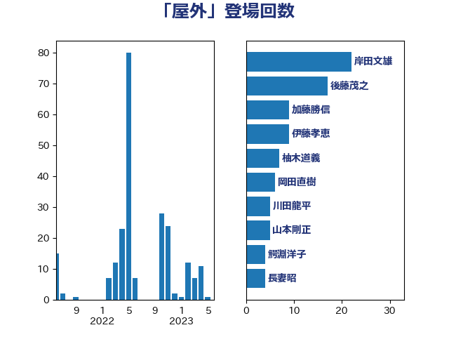

単語「屋外」

| 岸田文雄 | 自由民主党 | 22 回 |
| 後藤茂之 | 自由民主党 | 17 回 |
| 加藤勝信 | 自由民主党 | 9 回 |
| 伊藤孝恵 | 国民民主党 | 9 回 |
| 柚木道義 | 立憲民主党 | 7 回 |
| 岡田直樹 | 自由民主党 | 6 回 |
| 川田龍平 | 立憲民主党 | 5 回 |
| 山本剛正 | 日本維新の会 | 5 回 |
| 鰐淵洋子 | 公明党 | 4 回 |
| 長妻昭 | 立憲民主党 | 4 回 |
| 石川博崇 | 公明党 | 4 回 |
| 泉健太 | 立憲民主党 | 4 回 |
| 島村大 | 自由民主党 | 4 回 |
| 須藤元気 | 無所属 | 3 回 |
| 田村まみ | 国民民主党 | 3 回 |
| 田中健 | 国民民主党 | 3 回 |
| 猪瀬直樹 | 日本維新の会 | 3 回 |
| 梅村聡 | 日本維新の会 | 3 回 |
| 山際大志郎 | 自由民主党 | 3 回 |
| 宮本徹 | 日本共産党 | 3 回 |
| 中島克仁 | 立憲民主党 | 3 回 |
| 西村康稔 | 自由民主党 | 2 回 |
| 舟山康江 | 国民民主党 | 2 回 |
| 礒崎哲史 | 国民民主党 | 2 回 |
| 河西宏一 | 公明党 | 2 回 |
| 柴田巧 | 日本維新の会 | 2 回 |
| 山田勝彦 | 立憲民主党 | 2 回 |
| 小野泰輔 | 日本維新の会 | 2 回 |
| 小川淳也 | 立憲民主党 | 2 回 |
| 遠藤良太 | 日本維新の会 | 1 回 |
| 道下大樹 | 立憲民主党 | 1 回 |
| 輿水恵一 | 公明党 | 1 回 |
| 菊田真紀子 | 立憲民主党 | 1 回 |
| 茂木敏充 | 自由民主党 | 1 回 |
| 笠井亮 | 日本共産党 | 1 回 |
| 竹谷とし子 | 公明党 | 1 回 |
| 竹詰仁 | 国民民主党 | 1 回 |
| 穀田恵二 | 日本共産党 | 1 回 |
| 福島みずほ | 社会民主党 | 1 回 |
| 石川大我 | 立憲民主党 | 1 回 |
| 田畑裕明 | 自由民主党 | 1 回 |
| 生稲晃子 | 自由民主党 | 1 回 |
| 浜田聡 | NHK党 | 1 回 |
| 浅田均 | 日本維新の会 | 1 回 |
| 浅川義治 | 日本維新の会 | 1 回 |
| 林芳正 | 自由民主党 | 1 回 |
| 本田顕子 | 自由民主党 | 1 回 |
| 朝日健太郎 | 自由民主党 | 1 回 |
| 平山佐知子 | 無所属 | 1 回 |
| 岬麻紀 | 日本維新の会 | 1 回 |
| 山田太郎 | 自由民主党 | 1 回 |
| 山口壯 | 自由民主党 | 1 回 |
| 小倉將信 | 自由民主党 | 1 回 |
| 寺田学 | 立憲民主党 | 1 回 |
| 宮口治子 | 立憲民主党 | 1 回 |
| 塩村あやか | 立憲民主党 | 1 回 |
| 堀井巌 | 自由民主党 | 1 回 |
| 城井崇 | 立憲民主党 | 1 回 |
| 国光あやの | 自由民主党 | 1 回 |
| 吉田久美子 | 公明党 | 1 回 |
| 北側一雄 | 公明党 | 1 回 |
| 佐々木紀 | 自由民主党 | 1 回 |
| 仁木博文 | 無所属 | 1 回 |
| 井上哲士 | 日本共産党 | 1 回 |
| 中川宏昌 | 公明党 | 1 回 |